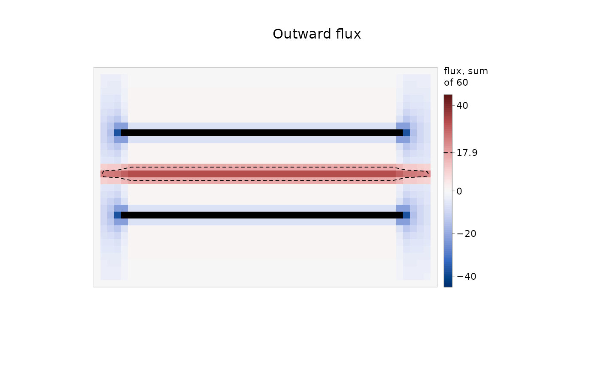
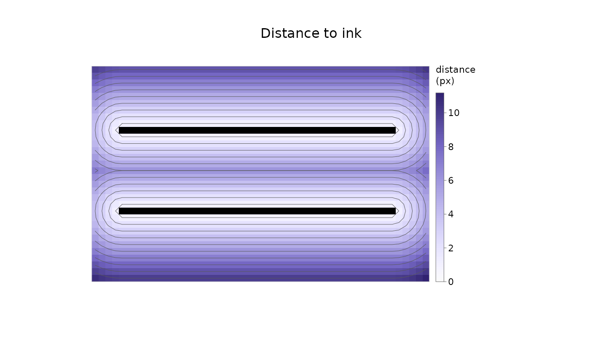
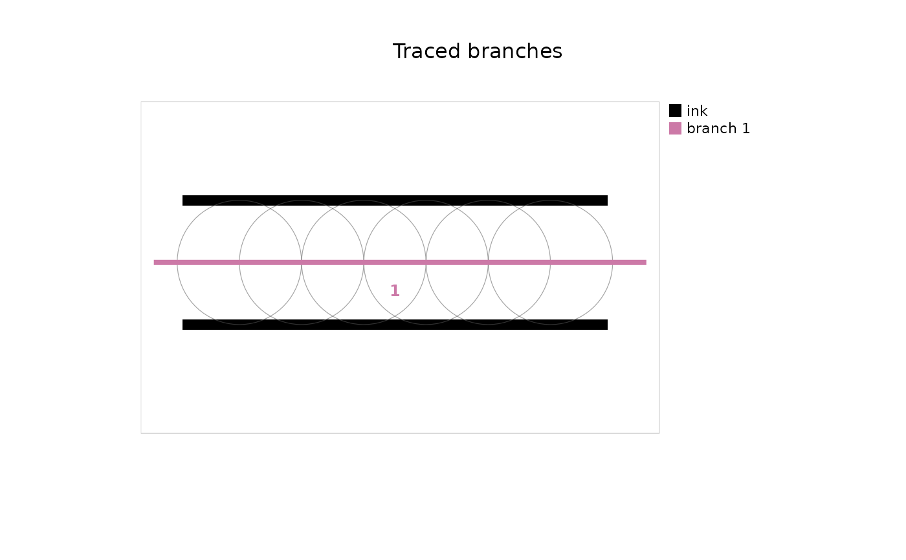
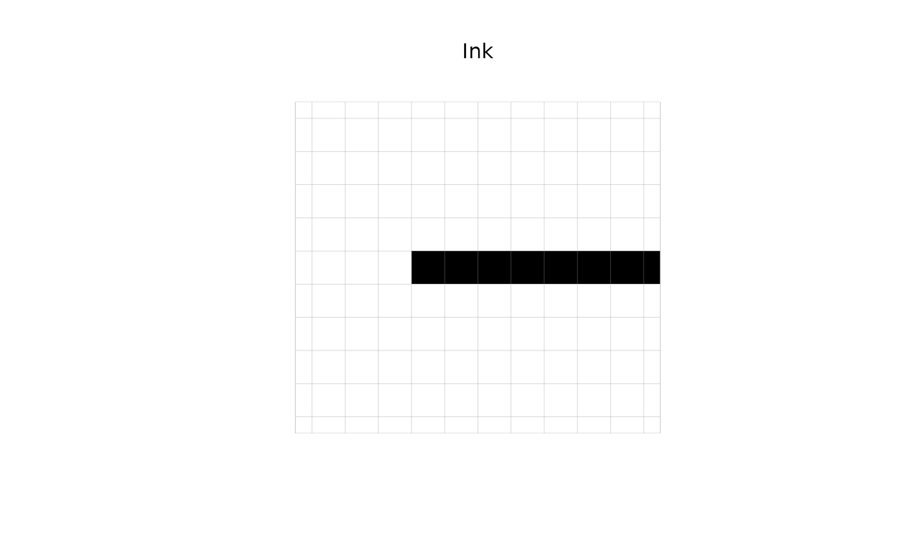

Draws one stage of the pipeline stored in an `mlv_mat`, in image coordinates: x increases to the right, y increases downward, pixel centres lie at integers and the aspect ratio is one. Ink is black in every stage. Quantities are colour-coded with a legend that names the quantity and its unit:
Usage
# S3 method for class 'mlv_mat'
plot(
x,
what = "flux",
drawing = NULL,
legend = TRUE,
zlim = NULL,
col = NULL,
main = NULL,
axes = FALSE,
overlay_col = "black",
overlay_lwd = 0.6,
discs = 0,
levels = NULL,
xlim = NULL,
ylim = NULL,
grid = FALSE,
...
)Arguments
- x
An `mlv_mat` from [compute_mat()].
- what
Stage to draw; see Description.
- drawing
Optional `mlv_drawing` whose segments are drawn on top, for example the drawing the MAT was computed from. Its dimensions must match.
- legend
Draw a colour bar or key to the right of the image. `"space"` reserves the same room without drawing a key, so that a series of stage figures, some with keys and some without, place the image identically.
- zlim
Optional colour limits for `"distance"`, `"flux"` and scores. The default flux limits are symmetric about zero.
- col
Optional colours. For a continuous stage, a vector replacing the default palette; for `"branches"`, colours recycled over the branches in index order.
- main
Panel title; the default names the stage. Titles use `cex.main = 1` and `font.main = 1` unless set in `...`.
- axes
Draw light pixel axes.
- overlay_col, overlay_lwd
Colour and width of the `drawing` overlay.
- discs
Draw the maximal inscribed disc (radius = the branch radius) at every `discs`-th point of every branch, as faint circles, omitting any disc that would cross the edge of the region shown; `0` (the default) draws none. Each disc is centred on the axis and touches the nearest ink, so its size shows the radius that every branch score is computed from.
- levels
Isolines drawn over the image: `NULL` (the default) draws the threshold isoline for `"flux"` and none otherwise; a numeric vector gives the levels of the stage's quantity (distance, flux or score) to draw; `numeric(0)` draws none.
- xlim, ylim
Optional image region to show, in pixel coordinates (for example `xlim = c(10, 30)` to zoom in). `ylim` may be given in either order; y always increases downward.
- grid
Draw a faint grid on the pixel boundaries, useful when zoomed in.
- ...
Further graphical parameters passed to [graphics::plot.window()] and [graphics::title()], such as `cex.main`.
Details
* `"ink"`: the rasterized ink mask (black on white). * `"distance"`: the signed distance map in pixels (sequential palette), with the ink in black. Ink pixels have nonpositive values; only an isolated single ink pixel is negative. * `"flux"`: the average outward flux, stored as the sum of `samples` dot products (diverging palette with limits symmetric about zero, zero drawn as a neutral near-white; ink in black). The skeleton threshold, `threshold * samples`, is marked on the colour bar and drawn as a dashed isoline in the image. * `"skeleton"`: the pixels whose flux exceeds the threshold (light red) and the thinned skeleton (dark red), with the ink in black. * `"branches"`: traced branches, one colour per branch, drawn as the medial axis is drawn everywhere (a line through the pixel centres, half a pixel wide, so it never reads as ink) and labelled with its index in `x$branches`. * a branch score name present in `x$score_images` (for example `"parallelism"`; see [compute_mat_properties()]): the score at each skeleton pixel on a 0-1 sequential palette. Skeleton pixels without a score (for example the ends of a branch, or a branch too short to score) are drawn in light grey, and the legend lists them as "no score".
The function changes no persistent graphics parameter. Room for the legend is reserved inside the plotting region, to the right of the image (the same room [plot.mlv_drawing()] reserves, so a drawing and a MAT stage of one canvas share coordinates), and later calls such as [graphics::points()] use the same image coordinates.
See also
[plot_branch_profile()] to plot a branch quantity against image position, under the drawing.
Examples
d <- mlv_drawing(list(matrix(c(5, 10, 45, 10), 1),
matrix(c(5, 22, 45, 22), 1)), 50, 32)
m <- compute_mat(d)
plot(m, "flux", drawing = d)

plot(m, "distance", levels = seq(1, 10))

plot(m, "branches", discs = 6)

plot(m, "ink", xlim = c(1, 12), ylim = c(5, 15), grid = TRUE, legend = FALSE)
